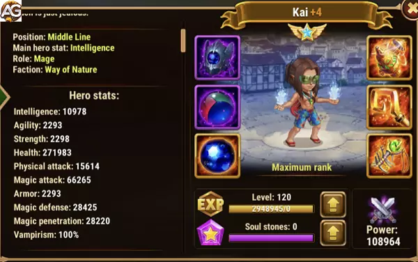

Com sua relÃquia em mãos, o novo Kai torna-se imparável — uma verdadeira força de destruição na Linha do Meio. Jogadores ansiosos para dominar seu potencial vão encontrá-lo brilhando ainda mais ao lado de heróis como Dorian, Galahad e K’arkh. Pronto para liberar o renascido Mago do Caos?
Guia do Kai - Hero Wars Alliance, um jogo desenvolvido pela Nexters.
Alto Dano Mágico: Forte causador de dano com escalonamento de Poder Mágico e glifos de Penetração Mágica.
Impacto do Ultimate: O Manto do Viajante fornece um poderoso dano explosivo à equipe inimiga.
Habilidade Passiva de Vampirismo: 120% de Vampirismo aumentam sua sobrevivência e sustentação durante as batalhas.
Interrompe Habilidades Inimigas: Seu efeito de arremesso ao ar pode atrapalhar as habilidades dos inimigos.
Bom Potencial de Combo: Funciona bem com heróis como K’arkh para combos devastadores.
Escala Bem: Glifos e artefatos de Inteligência aumentam sua efetividade geral conforme evolui.
⌠Contras
Frágil: Pode ser eliminado rapidamente se for focado, mesmo com glifos de vida.
Dependente de Equipe: Precisa de proteção dos aliados para liberar todo seu potencial de dano.
Facilmente Neutralizado: Times com Andvari podem contra-atacá-lo de forma eficaz, reduzindo seu impacto.
Não Aplica Debuffs: Carece de habilidades de redução adicionais, limitando sua utilidade contra algumas equipes.
Baixa Prioridade em Defesa Mágica: Vulnerável a magos inimigos devido a glifos defensivos mais fracos.
Prioridade de Evolução das Habilidades da RelÃquia Lendária de Kai - Hero Wars Alliance
Descubra a melhor ordem para evoluir as habilidades de Kai após seu retrabalho em Hero Wars Alliance, explicada passo a passo para todos os jogadores.
1ª – Grilhões do Vento
Lança um furacão que arremessa inimigos para o alto e causa dano: Dano: 156791 (80% Atq. Mág. + 18100).
No inÃcio, o efeito de controle ajuda a interromper inimigos, mas contra oponentes de alto nÃvel sua confiabilidade cai.
2ª – RelÃquia Lendária Aprimorada: Sopro do Abismo
Cria um segundo pilar de fogo no mesmo local. Dano Mágico: 58009 (30% Atq. Mág. + 6000).
Prioridade de Evolução:Muito Alta – Dobrar o ataque transforma Kai em um mago destrutivo capaz de dizimar equipes.
3ª – Esfera Explosiva
Lança uma esfera de fogo no inimigo com menor Defesa Mágica. Dano Mágico: 96432 (50% Atq. Mág. + 9750). Explosão: 182364 (Atq. Mág. + 9000).
Causa forte dano a um único alvo e pune inimigos agrupados.
Prioridade de Evolução:Alta – Excelente habilidade de explosão, especialmente contra heróis com baixa Defesa Mágica.
Prioridade de Evolução:Baixa – Bom para ganho extra de poder, mas menos impactante comparado às habilidades explosivas principais de Kai.
Melhor Skin para Kai – Hero Wars Alliance
Descubra a melhor ordem de skins do Kai em Hero Wars Alliance. Saiba quais skins evoluir primeiro para maximizar seu poder de batalha e impacto na equipe.
Prioridade de Evolução:Muito Alta – Ainda essencial, pois amplifica todas as partes do kit do Kai.
Skin Solar (Penetração Mágica +10.650)
A Penetração Mágica ajuda o Kai a ignorar a Defesa Mágica inimiga, garantindo que seus pilares de fogo e orbes causem dano consistente contra equipes mais resistentes.
Prioridade de Evolução:Alta – Uma excelente skin secundária para aumentar o dano, especialmente em PvP contra tanques ou inimigos resistentes à magia.
Skin de Inverno (Ataque Mágico +10.665)
Essa skin oferece um aumento direto no Ataque Mágico, fortalecendo o dano de suas habilidades, em especial Respiração do Abismo e Esfera Explosiva.
Essa skin reduz o dano recebido de magos inimigos. Tem valor situacional, mas não aumenta diretamente o papel ofensivo do Kai.
Prioridade de Evolução:Baixa – Só vale a pena evoluir se você enfrentar muitas equipes focadas em magos; caso contrário, priorize skins ofensivas e de atributo principal.

Kai com skin de Verão, Hero Wars Alliance.
Prioridade de Evolução dos Artefatos do Kai em Hero Wars Alliance
É ativado sempre que Kai usa seu ultimate, concedendo um poderoso aumento de Ataque Mágico para todo o time por 9 segundos.
Atributos: Ataque Mágico +21.360.
Chance de Ativação: 100%.
Este artefato está diretamente ligado à sua habilidade mais forte e beneficia o DPS de todo o time, tornando-o seu artefato mais valioso.
Aumenta tanto a Penetração Mágica quanto o Ataque Mágico, garantindo que Kai consiga atravessar a Defesa Mágica inimiga.
Atributos: Penetração Mágica +10.680; Ataque Mágico +5.340.
Essencial para que Kai permaneça eficaz contra tanques de alta defesa e times resistentes à magia.
Aumenta o atributo principal de Kai, Inteligência, que aumenta passivamente seu poder mágico.
Atributos: Inteligência +3.990.
Cada ponto de Inteligência concede a Kai +3 Ataque Mágico, +1 Defesa Mágica e +1 Ataque FÃsico. Embora útil, tem menos impacto imediato em batalha se comparado aos dois primeiros artefatos.
Prioridade de Evolução:Muito Alta – Essencial para o papel de Kai como causador de dano mágico, deve sempre ser o primeiro a ser evoluÃdo.
2º – Glifo de Penetração Mágica
Garante que as habilidades de Kai ignorem a Defesa Mágica inimiga, mantendo sua eficácia contra heróis resistentes e times com alta defesa mágica.
NÃvel 80: Penetração Mágica +12.850.
Prioridade de Evolução:Alta – Deve ser evoluÃdo logo após o Ataque Mágico para manter o dano consistente no fim de jogo e em batalhas PvP.
Aumenta a sobrevivência ao ampliar os pontos de vida, ajudando Kai a resistir a explosões e permanecer vivo para usar seu ultimate.
NÃvel 80: Vida +122.800.
Aumenta a resistência contra dano mágico, oferecendo proteção situacional contra times cheios de magos.
NÃvel 80: Defesa Mágica +12.850.
Prioridade de Evolução:Baixa – Última prioridade, já que Kai se beneficia mais de atributos ofensivos e de sobrevivência geral do que apenas resistência mágica.
Análise dos Talismãs de Kai em Hero Wars Alliance
Este Talismã oferece a Kai um aumento em Inteligência, Ataque Mágico e Defesa Mágica.
Esses bônus melhoram sua capacidade mágica e resiliência contra magos inimigos.
O segundo Talismã se concentra em Penetração Mágica e Armadura. A Penetração Mágica permite que Kai cause muito mais dano ao ignorar as defesas mágicas dos inimigos, tornando este Talismã mais ofensivo.
A penetração mágica de Kai pode atravessar as defesas de Andvari, permitindo que K'arkh siga com seus devastadores ataques fÃsicos. Esta combinação funciona bem para desmantelar equipes que dependem de proteção fÃsica, dando a K'arkh um caminho mais fácil para dominar o campo de batalha.
Como os Talismãs de Kai Melhoram Seu Papel
Em resumo, embora Kai não se torne um herói de primeira linha com os novos Talismãs, o Talismã da Ambição se destaca quando usado ao lado de K'arkh, especialmente contra equipes com Andvari. A sinergia entre a penetração mágica de Kai e o dano fÃsico de K'arkh os torna uma dupla formidável em certos confrontos PvP.
Você gostou do nosso Guia do Kai Rework para Hero Wars Mobile? Há algo que não entendeu ou gostaria de sugerir mudanças? Convidamos você a se juntar à nossa sessão de comentários na página do Alexandre Games Blog. Não hesite em expressar sua opinião, clarificar suas dúvidas e compartilhar sua sugestões. Clique no botão abaixo para começar:


 Guia da Nebula Hero Wars Mobile
Guia da Nebula Hero Wars Mobile